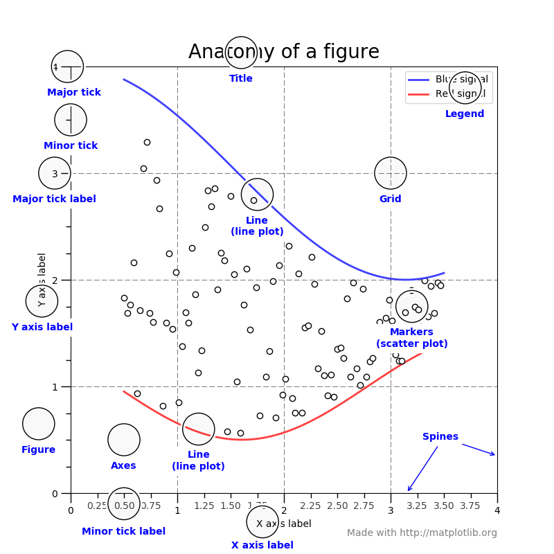
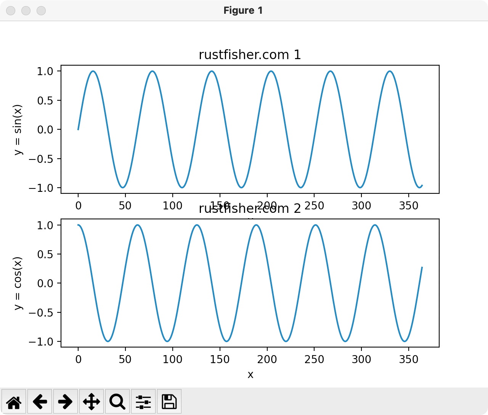

Python图表库Matplotlib 组成部分介绍
本文最后更新于：2023年4月15日 下午
图表有很多个组成部分，例如标题、x/y轴名称、大刻度小刻度、线条、数据点、注释说明等等。
我们来看官方给的图，图中标出了各个部分的英文名称

Matplotlib提供了很多api，开发者可根据需求定制图表的样式。
前面我们设置了标题和x/y轴的名称，本文介绍更多设置其他部分的方法。
绘图
先绘制一个事例图。然后以此为基础进行定制。1
2
3
4
5
6
7
8
9
10
11
12
13
14
15
16
17
18def demo2():
x_list = []
y_list = []
for i in range(0, 365):
x_list.append(i)
y_list.append(math.sin(i * 0.1))
ax = plt.gca()
ax.set_title('rustfisher.com mapplotlib example')
ax.set_xlabel('x')
ax.set_ylabel('y = sin(x)')
ax.grid()
plt.plot(x_list, y_list)
plt.show()
if __name__ == '__main__':
print('rustfisher 图表讲解')
demo2()
运行得到
红色框框里的是figure；绿色框框里的叫做ax。
代码中ax = plt.gca()获取到的就是绿色框框里的部分（对象）。
Figure 大图
Figure代表整张图，暂时称为“全图”或者“大图”。一张图里可以有多个子图表。最少必须要有一个图表。像上面那样。
Axes 数据图
一张张的图，图里显示着数据，暂称为“数据图”。一个大图里可以有多个数据图。但单个数据图对象只能在1个大图里。
多张数据图 subplots
例如同时存在2个数据图

1 | |
调用subplots()接口，传入数字指定要多少张数据图。
返回的多张图要用括号括起来。每个数据图可以绘制(plot)不同的数据。
标题用set_title()来设置。
可以看到上下两张图太挤了，有重叠部分。可以在plt.show()之前加一个fig.tight_layout()让它们拉开一点距离。
坐标轴
对于2维数据图，它有2个坐标，横坐标和纵坐标。有一些接口可以设置参数。
例如控制坐标轴的名字set_xlabel() set_ylabel；
显示数据范围
set_xlim方法可以控制x轴数据显示范围。同理y轴用set_ylim来控制。
对于显示范围，set_xlim方法主要参数为left和right；或者用xmin xmax。这两套不能同时使用。set_ylim主要参数是top bottom；或者ymin ymax。这两套不能同时使用。
增加显示范围控制的代码1
2
3
4
5
6
7
8
9
10
11
12
13
14
15
16
17
18
19
20
21
22
23
24
25
26def demo3():
x_list = []
y_list = []
y2_list = []
for i in range(0, 365):
x_list.append(i)
y_list.append(math.sin(i * 0.1))
y2_list.append(math.cos(i * 0.1))
fig, (ax1, ax2) = plt.subplots(2)
ax1.set_title('rustfisher.com 1')
ax1.set_xlabel('x')
ax1.set_ylabel('y = sin(x)')
ax2.set_title('rustfisher.com 2')
ax2.set_xlabel('x')
ax2.set_ylabel('y = cos(x)')
ax1.set_xlim(left=50, right=200.6) # 控制x轴显示范围
ax1.set_ylim(top=1, bottom=0.3) # 控制y轴显示范围
ax2.set_xlim(xmin=1, xmax=156.6) # 控制x轴显示范围
ax2.set_ylim(ymin=-0.3, ymax=0.3) # 控制y轴显示范围
ax1.plot(x_list, y_list)
ax2.plot(x_list, y2_list)
fig.tight_layout()
plt.show()
运行结果
刻度
tick意思是标记。在坐标轴上的是刻度。Major tick暂称为大刻度，minor tick暂称为小刻度。
使用set_xticks方法控制刻度显示。传入的列表是我们希望显示的刻度。minor参数默认为False，不显示小刻度。
关键代码如下1
2
3
4
5
6
7ax1.set_xticks([50, 60, 70, 150])
ax1.set_yticks([0.1, 0.2, 0.3, 0.7, 0.9])
ax1.grid() # 显示格子
ax2.set_xticks([1, 60, 70, 150], minor=True)
ax2.set_yticks([-0.1, 0, 0.1, 0.3], minor=True)
ax2.grid()

可见当minor=True，传入的刻度列表有可能不显示。
也可以控制大刻度上的文字旋转1
2plt.setp(ax1.xaxis.get_majorticklabels(), rotation=-45)
plt.setp(ax2.xaxis.get_majorticklabels(), rotation=-60)
边线 spine
spine是脊柱的意思，这里我们先称为边线。有上下左右4条边线。名称是top bottom left right
可以直接从图表对象获取它的边线，比如右边线ax1.spines.right。
一些简单的操作，例如
set_visible显示和隐藏set_ticks_position刻度显示的位置set_bounds边线显示范围set_linewidth线的宽度
隐藏右边线和上边线1
2ax1.spines.right.set_visible(False)
ax1.spines.top.set_visible(False)
让刻度显示在右边和上方1
2ax2.yaxis.set_ticks_position('right')
ax2.xaxis.set_ticks_position('top')
设置边线显示范围1
2ax3.spines.left.set_bounds(-0.5, 0.5)
ax3.spines.top.set_bounds(340, 400)
设置线的宽度1
ax3.spines.bottom.set_linewidth(2)
完整代码如下1
2
3
4
5
6
7
8
9
10
11
12
13
14
15
16
17
18
19
20
21
22
23
24
25
26
27
28
29
30
31
32
33import math
import matplotlib.pyplot as plt
def demo_spine():
x_list = []
y_list = []
for i in range(0, 365):
x_list.append(i)
y_list.append(math.sin(i * 0.1))
fig, (ax1, ax2, ax3) = plt.subplots(3)
ax_list = [ax1, ax2, ax3]
for i in range(0, 3):
cur_ax = ax_list[i]
cur_ax.set_title('rustfisher.com ' + str(i))
cur_ax.plot(x_list, y_list)
cur_ax.set_xlabel('x')
cur_ax.set_ylabel('y = sin(x)')
ax1.spines.right.set_visible(False)
ax1.spines.top.set_visible(False)
ax2.spines.bottom.set_visible(False)
ax2.spines.left.set_visible(False)
ax2.yaxis.set_ticks_position('right')
ax2.xaxis.set_ticks_position('top')
ax3.spines.left.set_bounds(-0.5, 0.5)
ax3.spines.top.set_bounds(340, 400)
ax3.spines.bottom.set_linewidth(2)
fig.tight_layout()
plt.show()
运行截图
数据点
控制数据点的样式。下面我们在一张图表里绘制多条数据线。
1 | |
plot()方法中，支持多种选项。
linestyle支持的选项
‘-‘, ‘–’, ‘-.’, ‘:’, ‘None’, ‘ ‘, ‘’, ‘solid’, ‘dashed’, ‘dashdot’, ‘dotted’
注释 legend
添加注释，调用lengend()方法。
在前面代码基础上添加1
2
3
4plt.plot(x_list, y_list, color='blue', linestyle='-.', linewidth=2, markersize=4)
plt.plot(x_list, y2_list, 'go', linewidth=1)
plt.plot(x_list, y3_list, 'r+')
plt.legend(['math.sin(i) * 2 - 4', 'math.sin(i) * 2', 'math.cos(i) * 1.3 + 3'])
控制注释显示的地方，添加bbox_to_anchor和bbox_transform属性1
2plt.legend(['math.sin(i) * 2 - 4', 'math.sin(i) * 2', 'math.cos(i) * 1.3 + 3'], bbox_to_anchor=(1, 1),
bbox_transform=plt.gcf().transFigure)
中文乱码问题
在设置标题用到中文的时候，可能会出现乱码。
可以设置rcParams的字体，解决乱码问题。1
plt.rcParams['font.sans-serif'] = ['Arial Unicode MS']
至此，我们把图表中各个部分都简要介绍了一下。
参考
本例环境
- macOS
- PyCharm CE
- Python3
参考资料
- 【运营的Python指南】绘制图表Matplotlib快速入门
- Python笔记 https://rustfisher.com/categories/Python/
- matplotlib https://matplotlib.org/